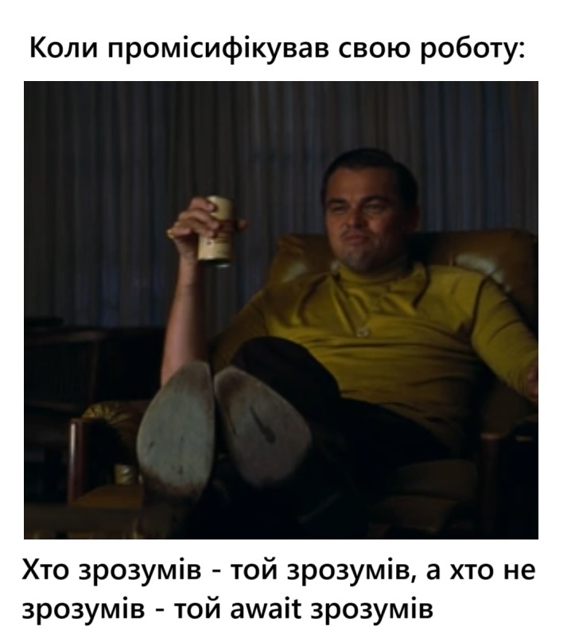

Привіт! Ось і 9 домашка готова!
Думав, що буде важко. Було довго. Принаймні таймер. Ну, не сам таймер... Проміси теж здавались незрозумілими. Але їх філософія дуже близька серцю - якщо не хочеш робити щось сам - доручи іншому! Навіть мемчик на цю тему зробив. Не знаю, чи зрозумілий, але хто поняв, той поняв :)))
